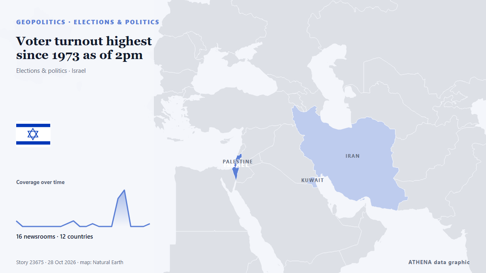

Voter turnout highest since 1973 as of 2pm

Showers are expected on Election Day, but turnout figures going back to 1949 show that the weather has never decided who shows up at the ballot box. από The Jerusalem Post
Αναφέρθηκε ανεξάρτητα από 16 μέσα σε 12 χώρες από τις 23 Οκτ, πρώτο από το BTA (English)· η κάλυψη εξασθενεί. Το ATHENA εκτιμά τον κίνδυνο χαμηλό (2.0/10), κυρίως λόγω της σοβαρότητας της βλάβης που περιγράφεται και της γεωγραφικής και τομεακής εμβέλειάς του. Η βεβαιότητα είναι 89% (υψηλή), καθώς το επιβεβαιώνουν 16 ανεξάρτητα μέσα με μέση αξιοπιστία πηγών 76%. Ποιοι το ανέφεραν: 5 μέσα στη χώρα Τουρκία · Turkey, 4 μέσα στη χώρα Ισραήλ · Israel, 2 μέσα στη χώρα Βουλγαρία · Bulgaria. Η κάλυψη διήρκεσε από 23 Οκτ έως 28 Οκτ, 129 ώρες.
Γιατί έχει σημασία: Οι εξελίξεις στην ασφάλεια και τη διπλωματία μπορούν να μετατοπίσουν συμμαχίες, εμπόριο και αγορές πολύ πέρα από τις χώρες που εμπλέκονται.
Τι άλλαξε: 8 νέες αναφορές από 6 μέσα στο 24ωρο έως 28 Οκτ.
Οι τίτλοι των ειδήσεων παρουσιάζονται στα αγγλικά, όπως δημοσιεύτηκαν.
Με μια ματιά
Επιλέγεται, βαθμολογείται και γράφεται από τη δημοσιευμένη μεθοδολογία του ATHENA. Κανένας συντάκτης δεν παρεμβαίνει σε μεμονωμένα γεγονότα. Πώς παράγεται ›
| 23 Oct 08:16 UTC | 2 |
|---|---|
| 23 Oct 14:16 UTC | 0 |
| 23 Oct 20:16 UTC | 0 |
| 24 Oct 02:16 UTC | 0 |
| 24 Oct 08:16 UTC | 0 |
| 24 Oct 14:16 UTC | 0 |
| 24 Oct 20:16 UTC | 0 |
| 25 Oct 02:16 UTC | 0 |
| 25 Oct 08:16 UTC | 1 |
| 25 Oct 14:16 UTC | 2 |
| 25 Oct 20:16 UTC | 0 |
| 26 Oct 02:16 UTC | 0 |
| 26 Oct 08:16 UTC | 1 |
| 26 Oct 14:16 UTC | 0 |
| 26 Oct 20:16 UTC | 0 |
| 27 Oct 02:16 UTC | 0 |
| 27 Oct 08:16 UTC | 10 |
| 27 Oct 14:16 UTC | 13 |
| 27 Oct 20:16 UTC | 0 |
| 28 Oct 02:16 UTC | 0 |
| 28 Oct 08:16 UTC | 0 |
| 28 Oct 14:16 UTC | 1 |
| 23 Oct 08:17 UTC | 0.0 |
|---|---|
| 25 Oct 19:08 UTC | 2.2 |
| 25 Oct 20:09 UTC | 1.1 |
| 27 Oct 16:02 UTC | 3.2 |
| 28 Oct 16:42 UTC | 1.5 |
| 29 Oct 14:38 UTC | 2.0 |
| 29 Oct 14:38 UTC | 2.0 |
Γιατί αυτοί οι αριθμοί
Σημασία
Κίνδυνος
Βεβαιότητα
Η κάλυψη — ποιος το ανέφερε και πότε
ο τίτλος όπως δημοσιεύτηκε · ανοίγει το πρωτότυπο- BTA (English) · Βουλγαρία · BulgariaAlpha Research: Presidential Election Turnout Expected at 40%
- The Jerusalem Post · Ισραήλ · IsraelIsrael braces for rainy Election Day, but can bad weather affect voter turnout?
- BTA (English) · Βουλγαρία · BulgariaCentral Election Commission UPDATED Voter Turnout at 4:00 P.M. Stands at 16.04% Compared to 24.12% in 2021 Presidential Election
- The National · Ηνωμένα Αραβικά Εμιράτα · United Arab EmiratesIsrael election live: 'Record-breaking' voter turnout in Knesset elections
- Middle East Eye · INTEarly turnout in Israel vote highest since 1981: elections committee
- Türkiye Today · Τουρκία · TurkeyIsrael election turnout hits 16.68% in first three hours, highest since 1981
- Middle East Eye · INTHighest voter turnout since 1977, says election committee
- Hespress English · Μαρόκο · MoroccoEarly turnout in Israel vote highest since 1981
- Middle East Eye · INTVoter turnout highest since 1973 as of 2pm
- Anadolu Agency (English) · Τουρκία · TurkeyVoter turnout in Israeli elections hits 55.7% nine hours into polling, 'highest ever' recorded
- Arab Times · Κουβέιτ · KuwaitIsrael Election Turnout Reaches 44.9%, Highest Since 1973
- Iran International (English) · Ιράν · IranIsrael polls near closing with Iran central to election
- ProtoThema English ·Israel election turnout hits highest level since 1973, reaching 55.7% by 4pm, as Netanyahu and Eisenkot cast their votes
- The National · Ηνωμένα Αραβικά Εμιράτα · United Arab EmiratesIsrael election live: Netanyahu's Likud party asks for extended voting hours amid record turnout
- DW English · Γερμανία · GermanyTurnout at Israel's election has reached a record high at the halfway stage
- Al Jazeera English · Κατάρ · QatarIsrael election turnout highest in 50 years as voting continues
- The Hill · Ηνωμένες Πολιτείες · United StatesIsraeli voter turnout hits 53-year high as Netanyahu fights to stay in power
- The Jerusalem Post · Ισραήλ · IsraelLikud officials sound alarm over voter apathy as Israel sees record-high election turnout
- Haaretz (English) · Ισραήλ · IsraelBreaking down Israel's historic Election Day turnout
- Anadolu Agency (English) · Τουρκία · Turkey11 hours into voting, Israel’s voter turnout hits high of 66.7%
- Türkiye Today · Τουρκία · TurkeyIsraeli turnout hits highest level since at least 1973 as polls near close
- Haaretz (English) · Ισραήλ · IsraelHigh voter turnout could push out smaller right-wing parties, hurting Netanyahu's bloc
- Anadolu Agency (English) · Τουρκία · TurkeyIsrael’s parliamentary election turnout reaches 74.3% by 8 pm
- Middle East Eye · INTIsraeli election turnout crosses 74 percent
- TASS (English) · Ρωσία · RussiaVoter turnout at Israel’s elections exceed 74% two hours before end of voting — TV
- Middle East Eye · INTTurnout among prisoners tops 88 percent, report says
- NDTV · Ινδία · IndiaDeaths, Defence, Inflation: What Drove Israel's Poll Highest Turnout Since 1999